Released: October 26, 2011
Next Release: November 2, 2011
Brazil Set to Play a Major Role in Long-Term Non-OPEC Growth in Conventional Liquids Production
Brazil will be responsible for some of the world's largest increases in oil production in the coming decades. Advances in seismic imaging have enabled the discovery of offshore "pre-salt" deposits of oil in Brazil's Campos and Santos Basins (Figure 1). These pre-salt fields, so-called because they lie under massive layers of salt, are located 18,000 feet below the ocean floor under more than 6,000 feet of salt. Brazil already produces 2.1 million barrels per day (bbl/d) of crude oil and lease condensate, yet just became a net exporter in 2008. Pre-salt development, coupled with the ability to meet a large share of domestic demand with biofuels, is projected to transform the country into a major oil exporter.
Figure 1. Campos and Santos basins
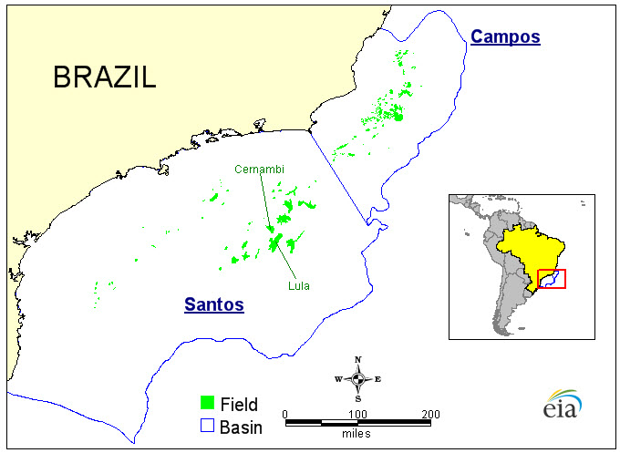
Source: U.S. Energy Information Administration (EIA), using Wood Mackenzie dataThe U.S. Energy Information Administration's International Energy Outlook 2011 (IEO2011) projects that the largest increases in conventional liquids production outside of the Organization of Petroleum Exporting Countries (OPEC) will occur in Brazil (Figure 2). Brazilian conventional production is projected to grow to 4.8 million bbl/d in 2035. This represents 40 percent of non-OPEC growth over the projection period and 14 percent of total world production growth in conventional liquids.
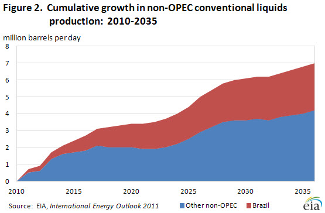
After 2015, the IEO2011 liquids supply projections are based on resource availability and the economic viability of production. While a massive resource base underlies EIA's projections of Brazilian production growth, the exact magnitude of the country's reserves is still unclear. According to Oil & Gas Journal, Brazil's proven oil reserves are currently estimated at 12.9 billion barrels, but this total does not include major pre-salt fields. Estimates of Brazil's pre-salt reserves have varied widely. In 2008, Haroldo Lima, Director General of Brazil's National Petroleum Agency, stated that the pre-salt could contain between 50 and 70 billion barrels of oil. In January 2011, Petrobras announced its assessment that the Lula and Cernambi fields contained 6.5 billion and 1.8 billion barrels of commercially recoverable oil, respectively. It will be some time before Brazil's pre-salt reserves are fully estimated. However, knowledge of precise reserve volumes is not critical to assessing the viability of Brazil's proposed expansion of production in the coming years.
Three major categories of challenges introduce uncertainty into estimates of Brazilian production growth: financial, operational, and legislative. The costs of Brazil's pre-salt development will be immense. In July 2011, Petrobras released its 2011-2015 business plan, which outlines a $224.7 billion investment program focused heavily on exploration and production. The plan calls for a reduction in downstream investment and divestiture of foreign assets to facilitate a sharpened domestic upstream focus. Notwithstanding Petrobras' 2010 share offering of $67 billion (the largest ever), the company will still need to maintain significant operating cash flow to achieve its goals.
In addition to costs, pre-salt development presents numerous technical and operational challenges stemming from the scale of the endeavor. The reserves are located more than 150 miles off Brazil's coast, making them difficult for pipelines and people to reach. Petrobras plans to purchase 45 floating production, storage, and offloading (FPSO) vessels to extract the pre-salt oil - currently fewer than 100 such ships exist in the world. Expanding Brazilian production will also require additional human capital. These challenges will be especially difficult because, unlike other Brazilian offshore ventures, Petrobras will be the exclusive operator of future pre-salt fields. Petrobras plans to train more than 240,000 technical professionals to work in the petroleum industry in the coming decade - the company currently employs just over 80,000 people.
While production is underway in some of Brazil's pre-salt fields, the scaling up of production also depends on the Brazilian government's ability to arrive at an agreement on the distribution of future oil revenues. At issue is the division of revenues between the federal government, states, and municipalities. Past arrangements have predominantly benefited oil-producing states; non-producing states now want a larger share. Because revenue distribution must be set in advance of bid rounds, Brazil will not be able to conduct further auctions of pre-salt blocks until these issues are settled.
While all of these challenges introduce some uncertainty into projections of Brazilian production, they are unlikely to hinder pre-salt development.
Gasoline prices fall while diesel prices rise
The U.S. average retail price of regular gasoline fell for the sixth time in seven weeks, decreasing 1.4 cents to reach $3.46 per gallon. The average price is $0.65 per gallon higher than last year at this time. The Midwest had the largest decrease (just over five cents per gallon) to put the price at $3.36 per gallon. The Rocky Mountain regional average declined a penny to $3.52 per gallon while the Gulf Coast price was down a tenth of a cent. Reversing the trend, the East Coast price increased about a penny to $3.46 per gallon and the West Coast averaged $3.79 per gallon, a fraction of a cent higher than last week.
The national average diesel price increased 2.4 cents to $3.83 per gallon. The diesel price is $0.76 per gallon higher than last year at this time. Diesel averages were up across all the regions, with the largest increase occurring on the West Coast. The West Coast price rose almost four cents to $4.05 per gallon. The Midwest average moved about three cents higher. The East Coast and Gulf Coast regions increased about two cents to put prices at $3.83 per gallon and $3.75 per gallon, respectively. The Rocky Mountain price was $3.91 per gallon, over two cents above last week.
Residential heating oil prices increase
Residential heating oil prices increased slightly during the period ending October 24, 2011. The average residential heating oil price rose $0.03 per gallon last week to reach $3.80 per gallon, an increase of $0.81 per gallon from the same time last year. The wholesale heating oil price decreased by $0.02 per gallon last week to $3.11 per gallon; $0.79 per gallon more than last year at this time.
The average residential propane price remained relatively flat, at $2.80 per gallon. This is a rise of $0.37 per gallon compared to the $2.43 per gallon average from the same period last year. Wholesale propane prices decreased by $0.07 per gallon, falling from $1.56 per gallon to $1.49 per gallon. This was an increase of $0.22 per gallon when compared to the October 25, 2010 price of $1.27 per gallon.
Propane Inventories Post Weak Build
Total U.S. inventories of propane grew by only 0.2 million barrels last week, ending at 59.1 million barrels, as atypically low imports failed to bolster the stock level. The East Coast and Midwest regions added 0.4 million barrels and 0.3 million barrels, respectively. Meanwhile, the Gulf Coast regional stocks dropped 0.6 million barrels and the Rocky Mountain/West Coast stocks were virtually unchanged. Propylene non-fuel use inventories represented 6.1 percent of total propane inventories.
Text from the previous editions of This Week In Petroleum is accessible through a link at the top right-hand corner of this page.
| 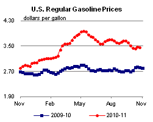 | 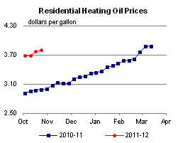 | ||||||
| 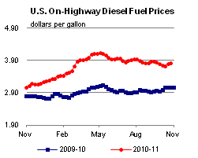 | 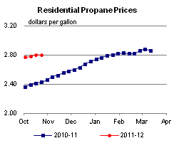 | ||||||
| Retail Data | Changes From | Retail Data | Changes From | ||||
| 10/24/11 | Week | Year | 10/24/11 | Week | Year | ||
| Gasoline | 3.462 | Heating Oil | 3.798 | ||||
| Diesel Fuel | 3.825 | Propane | 2.798 | ||||
| 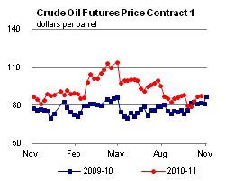 | 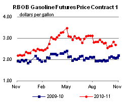 | ||||||||||||||||||||||||||
|
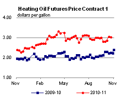 | ||||||||||||||||||||||||||
| *Note: Crude Oil Price in Dollars per Barrel. | |||||||||||||||||||||||||||
| 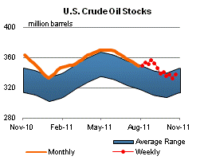 | 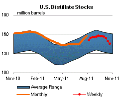 | ||||||
| 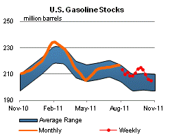 | 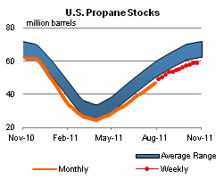 | ||||||
| Stocks Data | Changes From | Stocks Data | Changes From | ||||
| 10/21/11 | Week | Year | 10/21/11 | Week | Year | ||
| Crude Oil | 337.6 | Distillate | 145.5 | ||||
| Gasoline | 204.9 | Propane | 59.111 | ||||